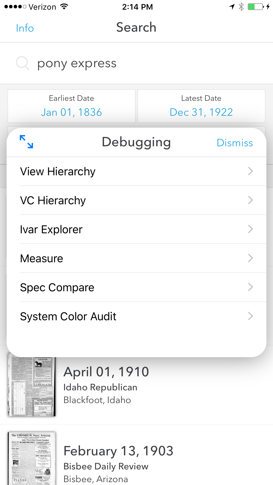

1. 新发现私有API
今天上午iOS技术圈有一些骚动，原因就是图图发布了一条微博:
内容是国外友人在浏览iOS 私有库的时候发现苹果大大隐藏了一个功能，这个功能提供苹果的工程师调试APP，在APP内可以查看APP的UI等信息。戳次查看文章内容!
主要调用UIKit.framework的两个私有API:
|
|
启动APP后主要界面张这个样子:

因为是私有API，这段代码是不能直接使用的，也不能提交到App Store上，所以我认为你可以在公司提交版本内测或者开发过程中加入，这样发现bug的时候iOS工程师就顺利的发现问题。
|
|
私认为在实际开发中Xcode内置更加友好且功能完善的UI查看工具，界面和Reveal也很相似，新发现的私有API可能用处不是特别大。
2. 更好用的FLEX
在发现这个私有API之前，已经有几个调试UI的轮子，个人比较喜欢的一个是Reveal功能强大加界面友好到没啥说的，只是商业产品，这里推荐另一款由Flipboard团队开源的FLEX。详情还是戳此!，功能列举了一大堆，除了能查看UI信息还能抓取网络接口信息，访问APP内部资源，模拟3DTouch等。
3. 神器IPAPatch
IPAPatch借助苹果私有API或者FLEX可以说能够做的事情就是太多了。IPAPatch的这里原理就不讲了，具体的已经开源了，详情使劲戳此!
你需要做的：
1、一个脱壳的APP(想要调试的APP)
2、私有API或者FLEX的framework
将IPAPatchclone到电脑，将APP重命名为app.ipa放入到IPAPatch的Assets目录下，将私有API的代码写入IPAPatchEntry.m文件或者将FLEX.framework导入到IPAPatch的Assets/Frameworks目录下，在IPAPatchEntry.m文件中加入[[FLEXManager sharedManager] showExplorer];
然后 cmd + R 就等待神奇的结果吧。